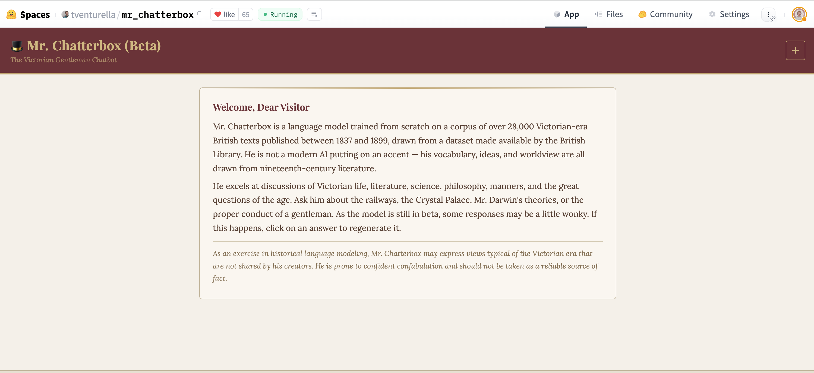
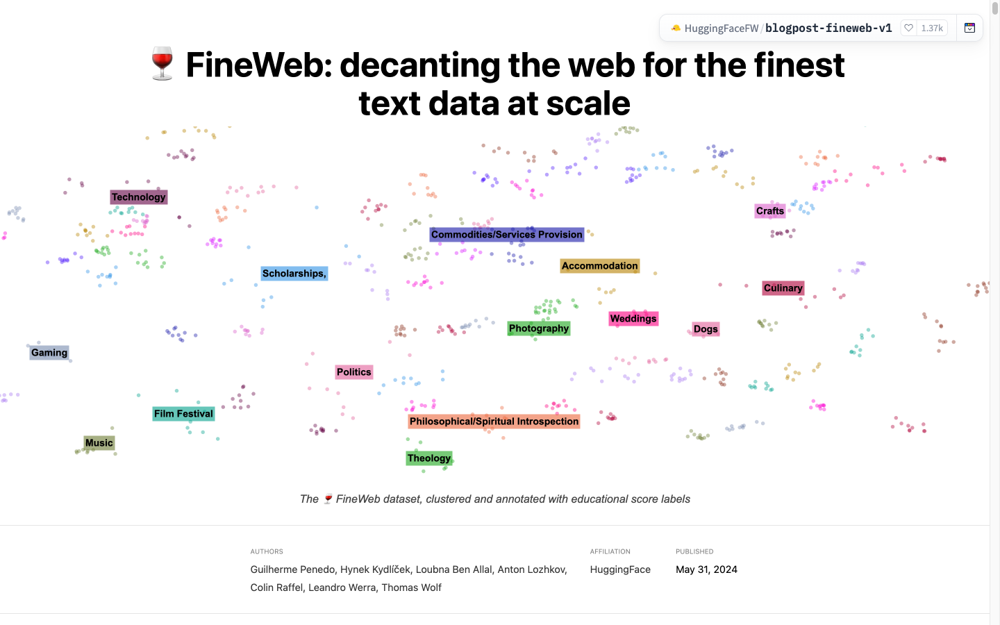

Infrastructure is the friends you made along the way
Why collaboration and shared data matter more than servers
Hugging Face — Machine Learning Librarian
2026-06-26
Hello
- Daniel van Strien — Machine Learning Librarian @ Hugging Face
- Background in libraries, archives, computational humanities
- Communities: BigLAM, Small Models for GLAM
There is technical infrastructure
And you mostly don’t have to build it
Most of this already exists:
- Storage for very large datasets (Xet, Buckets)
- Compute you rent by the minute (Jobs)
- Hosting and a viewer for data anyone can browse
Lots of options: commercial cloud, the European Cloud for Heritage Open Science, the data space for Cultural Heritage, the Hub.
So what should a GLAM lab actually build?
Building infrastructure is hard. Maintaining it is harder.
Is it worth building your own platform to host 100 TB datasets?
Where does your effort actually add something no one else will?
Preservation might be the exception, where keeping your own copy matters. For most things, use what already exists.
“But — don’t depend on commercial platforms”
The objection I expect from this room
My honest answer: government-funded is not a safe bet in 2026 either.
The Data Rescue Project exists to preserve public data at risk of disappearing.
Why does it need to exist?
- Where the funding comes from doesn’t guarantee it will last
- Commercial and public infrastructure can both disappear
What actually keeps things safe
LOCKSS — Lots Of Copies Keep Stuff Safe.
What actually helps:
- Open formats (Parquet, ALTO/IIIF, not a vendor’s database)
- Portability, so your tools run anywhere
- Many copies: your repo, the Hub, a partner, local disk
Use good infrastructure, but don’t rely on only one. Commercial or public.
A note: agents are becoming infrastructure too
The way we build is changing too.
AI agents can now do a lot of the building work themselves.
So the hard part isn’t really the building. It’s having the data, and the people who know how to make it.
Infrastructure isn’t just servers
My actual argument
Collaboration and shared datasets, for evaluation and for training, are infrastructure.
They have a long tail of plausible benefit: you can’t predict who will reuse them, or how.
So fund and maintain them like anything else you depend on.
You never know what it will be used for
In 2022 I put ~25 million pages of digitised British Library books on the Hub, through BigLAM.
Four years later, someone trained a Victorian chatbot from scratch on them.
The Europeana Newspapers dataset turned up inside German Commons, a 154-billion-token German-language dataset.
Put data somewhere people can find it, and they build things you never imagined.
Mr. Chatterbox, built from those books

How do you know a model is working?
For libraries, this is mostly an open question.
Does this OCR model read 18th-century print? Handwriting? Gaelic? Your catalogue cards?
There’s usually no benchmark that tells you. Shared evaluation sets for real collections are themselves infrastructure.
FineWeb: the pattern, in public

A 15-trillion-token open dataset. What made it good was evaluation: train small models, run benchmarks, keep what helps. Open data, open recipe, open evals.
FineBooks: the same bet for libraries
A FineWeb-style effort for digitised library collections. Still early.
Not one big corpus, but a series of reusable artifacts: tools libraries can run, example datasets, small models. The corpus emerges from adoption, not central control.
Already doable: re-OCR’d Britannica (1771), 2,724 pages, for ~$5.
It already works
This already happens:
- FineWeb-C — 500+ contributors, 58,000+ annotations, 122 languages
- BigLAM — 55+ institutions
- Data is Better Together · reasoning-dataset competition (150+)
With shared data and shared benchmarks, labs can choose tools based on evidence.
You learn to build, not just use
Building a shared dataset teaches you how AI actually works.
For GLAM labs, that understanding matters more and more.
And it stays with your staff, even when funding or platforms change.
So
Where to put your effort
- Rent servers, storage and compute. Keep your data portable
- Build shared data and benchmarks together
- The lasting part is the people and what they learn
Infrastructure is the friends you made along the way.
Pick one dataset or benchmark, and build it with another institution.
Thank you
- These slides: danielvanstrien.xyz/slides/glam-labs-futures-2026
- BigLAM · Small Models for GLAM
- Libraries as training data
Daniel van Strien · Machine Learning Librarian, Hugging Face

GLAM Labs Futures · 26 June 2026 · Edinburgh · danielvanstrien.xyz